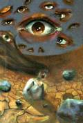

پذيرش > سایت نوشته ها > تقلای سخت رهایی از خاک خشک و بیحاصل/گفت و گوي با جلوه جواهری پیرامون نمایشگاه (...)


 تقلای سخت رهایی از خاک خشک و بیحاصل/گفت و گوي با جلوه جواهری پیرامون نمایشگاه نقاشیاش/راديو زمانه تقلای سخت رهایی از خاک خشک و بیحاصل/گفت و گوي با جلوه جواهری پیرامون نمایشگاه نقاشیاش/راديو زمانه
23 دی 1386 - - نسخه قابل چاپ
hز طریق سایت «تغییر برای برابری» با جلوه جواهری آشنا شدم؛ یعنی از طریق نوشتههایش. در اسفند ماه گذشته که به همراه ۳۲ نفر دیگر دستگیر شد، عکسش را هم دیدم: پلاکاردی در دست گرفته بود؛ با چنان آرامشی که گویی در هایدپارک لندن ایستاده است. اگر اشتباه نکنم این عکس از تجمع روز جهانی مبارزه با ایدز که در پارک دانشجو در آذر ۱۳۸۴ برگزار شد، گرفته شده بود.
یک بار هم که به همراه دیگر دوستانش برای معرفی «کمپین یک میلیون امضاء» به خرمآباد رفته بود، دستگیر شد. به همراه همه کسانی که در آن نشست خانگی حضور داشتند. بازداشتش به شب نکشید و آزادش کردند.
وقتی در آذر ماه امسال دوباره - دقیقتر گفته باشم، برای بار سوم - جلوه را دستگیر کردند، دوستانش از داستان زندگیاش نوشتند. زندگیاش کم از درد و رنج نبوده است. در کودکی پدر را از دست میدهد. مادرش با کار خیاطی زندگی بچههایش را تأمین میکند. در محله جوادیه، جلوه با دنیا آشنا میشود. در همان محله دو برادرش به جبهه میروند و دیگر برنمیگردند.
بعدها ساکن محله نواب میشود و آنجا میفهمد که خیلی چیزها در دنیای پیرامونش سر جایشان قرار ندارند. زن، انسانی برابر نیست. قرنها سلطه مردسالاری و حال قوانین جمهوری اسلامی، زن را در مقام موجودی پاییندست قرار داده است. یاد میگیرد که نباید گذاشت چرخ روزگار همیشه بر این بنای بیعدالتی بگردد. گر چه میداند که سر راهش ناملایمتیها فراوان است، اما این را هم میداند که او دن کیشوت تنها نیست.
با دیدن نقاشیهای او یکباره با جلوه دیگری از جلوه جواهری آشنا شدم. نقاشیهایش غافلگیرم کرد. بر روی اینترنت تنها سه اثر او را دیدم. نامشان را نمیدانم. بر یکی، نگاهها، خیره مانده به تقلای زنی که تا سینه در خاک دفن است: سنگسار میشود یا شاید هم تقلای دردآوری است برای رهایی از این خاک سفت و بیحاصل.
در دومی باز خاک خشک و بی حاصل را میبینیم و یک شخص تنها را در برهوت این خاک خشک و بیحاصل. در این تابلو هم دو چشم خیره حضور دارند. در نقاشی دیگر نیمکتهای خالی جای خاک خشک را گرفتهاند. شاید شما به عوض نیمکت، صندوق ببینید مثلاً. نه چشمی را میبینیم و نه پیکری را. اما صحنه از حادثه خالی نیست. چیزی اتفاق افتاده و باز دارد اتفاق میافتد: بر روی نیمکتها سیب چیده شده است و سیبهای دیگری شتابان از راه میرسند.
این سه اثر به همراه ۱۱ نقاشی دیگر از جلوه جواهری در نمایشگاهی در تهران نمایش داده شد. هدف از آن یاری به زنان زندانی بود. ابتکار دیگر در همین راستا ایجاد کتابخانه برای زنان زندانی بود؛ به همت مريم حسینخواه.
در مورد ابتکار این نمایشگاه از خود جلوه که چند روز پیش از زندان اوین آزاد شده است، ضمن تبریک آزادیاش میپرسم:
از چند سالگی نقاشی کردن را شروع کردی؟ آیا برای این کار تعلیم دیدی؟
من در سال ۷۶ در یک نمایشگاه نقاشی گروهی، که کارهای خواهرم و همکلاسیهایش در آن به نمایش گذاشته شده بود، علاقهمند شدم که خودم هم نقاشی کنم. همانجا با استاد خواهرم که بعدها همسرش شد، صحبت کردم و در کلاس او ثبت نام کردم.
دوست داشتم احساساتم را با تصویر بیان کنم؛ اما میترسیدم که از عهدهاش بر نیایم. اما استاد به من قوت قلب داد که نقاشی کاری نیست که استعداد بخصوصی بخواهد؛ بلکه کافی است علاقهمند باشم و تمرین کنم. همین دلگرمی باعث شد که اعتماد به نفس بیشتری برای شرکت در کلاس و قلم به دست گرفتن پیدا کنم. البته هیچ وقت احساس رضایت نکردم و حس و حرفم را نتوانستم آن طور که دلم میخواست، بیان کنم.
هنوز هم نقاشی میکنی؟
نه چندان. در واقع ایدهی نمایشگاه شاید باعث شود که دوباره قلم به دست بگیرم. مدتها بود که این کار را کنار گذاشته بودم. یعنی دیگر تمرین نقاشی نداشتم و فرصت کمی را برای آن میگذاشتم. اما زمانی که تنها هستی، بیشتر احساس میکنی که نیاز داری چیزی را که در درونت هست، بیان کنی. به همین دلیل روزهای گذشته خیلی دوست داشتم تا تصویر ذهنم را بکشم.
در آن نمایشگاه، که پنجشنبه ششم دیماه برگزار شد، به گفته همسرت ۱۶ اثر هم از نقاشان دیگر حضور داشت. نقاشان این آثار هم از پشتیبانان «یک میلیون امضا» هستند؟
در حقیقیت من نقاشان دیگر را نمیشناسم. اما از آنجایی که گالری برای کمک به زندانیان بود، احتمال این را میدهم که باقی نقاشان هم از حامیان کمپین و یا مدافعان حقوق برابر باشند.
آیا زنان همبندت در اوین از این نمایشگاه مطلع شدند؟ عکسالعملشان چه بود؟ آیا موفق شدی با فروش کارهایت یا با کمکهای دیگر، به آزادی کسی کمک کنی؟
چند نفری از زنان همبندم خبر نمایشگاه را در روزنامه خواندند. من فکر میکنم خوشحال شدند؛ چون به همدیگر خبر را نشان دادند و کمی هم با محبت سر به سر من گذاشتند و حتی دو نفر از من تشکر کردند. پولی که از فروش نقاشیها به دست آمد به صندوق حمایت از زندانیان سپرده شد و یک نفر هم در این مدت آزاد شد.
امیدوارم کارهایی به این شکل ادامه داشته باشد. برخی از زنان با کودکان خود در زندان هستندیا کودکان چشم انتظاری را بیرون زندان دارند. آنها برای مرخصی احتیاج به فیش حقوقی یا سند دارند که قابل خریداری است. برخی هیچ خانوادهای ندارند و کسی به آنها حتی برای زندگی روزانه پولی نمیرساند و برخی هم توان پرداخت بدهی خود به شاکیانشان را ندارند.
برخی نیازها هم هست که شاید مدتدارتر باشد. مثلاْ راهاندازی کلاسهای نقاشی در زندان و یا تهیه لوازم نقاشی برای زندانیان. اکنون زنان زیر ۳۰ سال زیادی را در زندان میبینید. آنها دوست دارند نقاشی کنند و شاید بیان احساساتشان از طریق نقاشی خیلی مؤثر باشد.
بسیاری از آنها برای لحظهای آرامش، مواد مصرف میکنند و یا خودزنی میکنند در حالی که شاید بیان احساساتشان از طریق نوشتن و یا نقاشی کردن آنها را سبک کند به آنها آرامش دهد و به خودشان بیشتر توجه نشان دهند.
یاد دلارام دارابی محکوم به اعدام میافتم که در زندان نقاشی میکند و به گفته خودش با رنگها و فرمها از خود دفاع میکند؛ تا مگر رنگها به زندگی بازش گردانند. مهرماه سال گذشته نمایشگاه آثارش در تهران تحسین همه را برانگیخت.
از جلوه میپرسم که آیا صندوق حمایت از زنان زندانی که گفته شد عواید فروش تابلوها به آن واریز شده، ادامه خواهد یافت؟ قصد نداری این ابتکار را گسترش دهی؟
این صندوق قطعاً ادامه خواهد داشت و اکنون ابتدای کار آن است. این ابتکار از آن من نیست و همه ما در آن شریکیم. من فکر میکنم اگر برایمان مهم است که ذرهای زندگی درون زندان برای زنانی که اغلب خودشان قربانیان تبعیضهای موجود هستند، قابل تحملتر شود، بهتر است همراه هم به ایدههای نو برای گسترش آن فکر کنیم.
امروز به دیدن تئاتری از بیضایی رفتم. همه ذهنم مشغول آن بود که کاش میشد یک روز اجرای نمایش تئاترها در سالن نمایش زندان اوین برگزار شود. در مدتی که من آنجا بودم، یک تئاتر به نام هوو در آن جا برگزار شد. برگزارکنندگان خود زندانیان بودند و برخیشان زیر قصاص بودند.
اینکه خود زندانیان بتوانند نمایش اجرا کنند، خیلی عالی است و نمایش هم به خصوص مضمون زنانهای داشت. اما خوب اینکه بتوانند با دنیای خارج از زندان از طریق نمایش ارتباط داشته باشند هم به آنها احساس دیگری میدهد.
مصاحبه و تنظيم :منيره برادران
ارسال به
بالاترین
،
توییتر
،
فریندفید
،
فیسبوک
در همين بخش :
 یک خبر تلخ؟ یک قانونشکنی؟ یک تصمیم بخشنامهای جدید؟ یک خبر تلخ؟ یک قانونشکنی؟ یک تصمیم بخشنامهای جدید؟
چرا بایست به سکسوالیته پرداخت؟ / نفیسه آزاد
آزارجنسی خانگی؛ «قربانی» نه، «نجات یافته»
زنان، بزرگترین بازندگان بهار عرب
سانسور از دیدگاه جنسیتی/الهه امانی
ديگر بخش ها :
طرح یک میلیون امضا
|
مقالات
|
سایت نوشته ها
|
اخبار
|
گزارش كمپين
|
گفت و گو
|
علیه سکوت
|
كوچه به كوچه
|
نامه های شما
|
گزارش ویژه
|
گفتگو با اعضا
|
ویژه سالگرد کمپین
|
تصویر برابری
|
دل آرام علی
|
تریبون
|
مقالات
|
تاریخ شفاهی
|
خارج از چارچوب
|
کتابخانه
|
درباره کمپین
|
کمپین در شهرها
|
کمپین در بند
|
صدای تغییر
|
ویژه 22 خرداد
|
لایحه حمایت از خانواده
|
گالری
|
عشا مومنی
|
امیر یعقوبعلی
|
خدیجه مقدم
|
راحله عسگری زاده و نسیم خسروی
|
پروین اردلان،جلوه جواهری، مریم حسین خواه، ناهید کشاورز
|
زینب پیغمبرزاده
|
سعیده امین، سارا ایمانیان، محبوبه حسین زاده، ناهید کشاورز و همایون نامی
|
احترام شادفر
|
نسیم سرابندی زاده،فاطمه دهدشتی
|
وبلاگ مهمان
|
پرونده خرم آباد
|
دستگیری ها
|
مریم مالک
|
پرستو اللهیاری
|
مهرنوش اعتمادی
|
سمیه رشیدی
|
Other Languages
|
همراهان
|
«فراخوان کمپین ده روز با بهاره هدایت»
| English
|